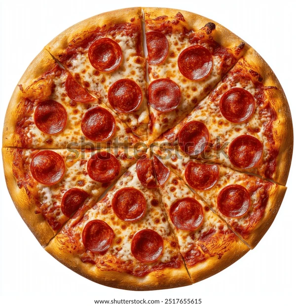

Енергетична цінність (на 100 г): 310 ккал
Харчова цінність (на 100 г): білки — 12.5 г, жири — 16 г, вуглеводи — 29 г
Вага порції: 440 г (30 см.)
Улюблена класика багатьох: гостренькі скибочки пікантної ковбаси пепероні, велика порція тягучого сиру моцарела та фірмовий томатний соус на хрусткій скоринці тонкого тіста.
Піца «Пепероні» — один із найпопулярніших видів піци у світі. Секрет її успіху полягає в простоті та ідеальному балансі інгредієнтів. Спеціальна гостра ковбаса пепероні при запіканні виділяє ароматну олію, яка просочує ніжний шар моцарели та фірмового томатного соусу, роблячи кожен шматочок неймовірно насиченим.
Найкраще смакує гарячою та хрусткою. Пікантність пепероні чудово підкреслить прохолодне пиво, класична кока-кола чи свіжий томатний сік.
Зберігати при температурі від +2°C до +6°C не більше 12 годин з моменту приготування. Перед вживанням обов'язково підігріти.